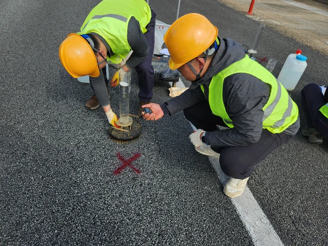
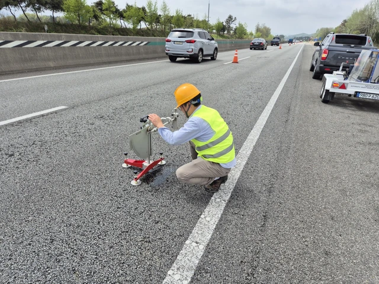
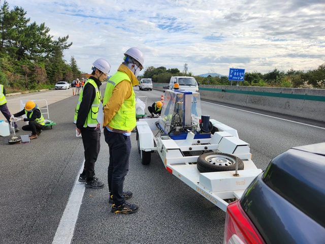

Participation: 2023–2024 · Field measurement support · Project documentation
Porous pavement field performance
How is porous pavement performance measured in service?

Field permeability testing
Two field workers operate the permeability apparatus and time the measurement on the pavement.


Skid-resistance testing
Pendulum skid-resistance testing on the pavement surface.


FWD testing
Falling Weight Deflectometer (FWD) equipment and the field survey team on the test section.
Research objective
The monitoring project examined the field performance of a porous asphalt test section between Jeongeup and Taein on the Honam Expressway. The overall project ran during 2021–2024; my participation was during 2023–2024.
My contribution
- Assisted with field permeability and skid-resistance measurements.
- Supported falling weight deflectometer (FWD) testing.
- Contributed to technical reporting and project documentation.
Method & research process
- 01Test location
- 02Instrument setup
- 03Measurement and documentation
Permeability, skid resistance, and pavement deflection provide different views of in-service behavior. The photographs show field permeability testing, pendulum skid-resistance testing, and Falling Weight Deflectometer (FWD) equipment positioned on the pavement.
Contribution & output
I supported complementary field measurements and contributed to the technical reports and project documentation that recorded the test-section monitoring work.